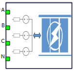
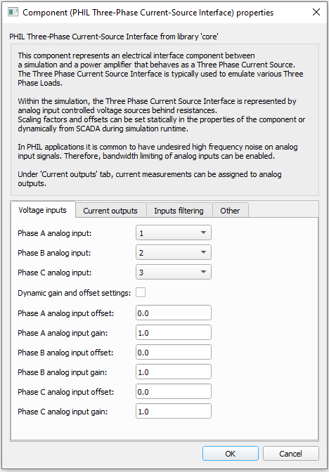
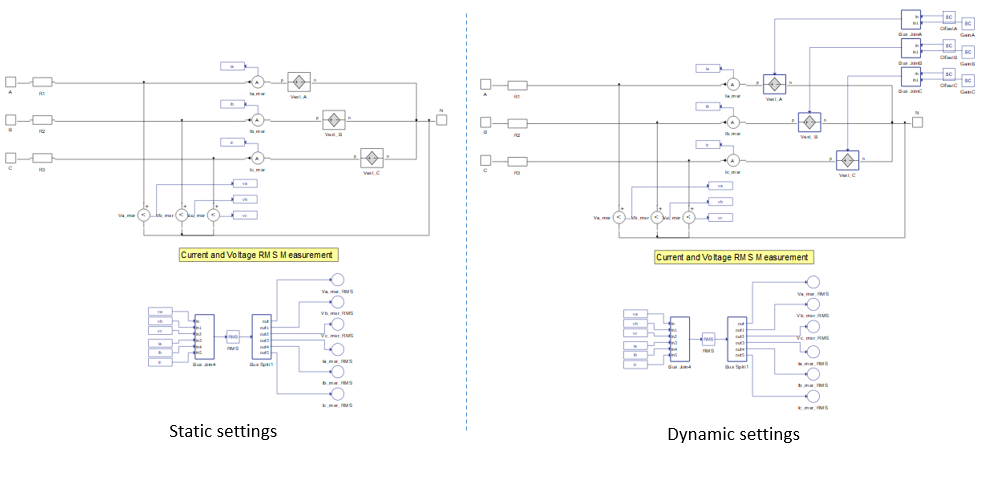
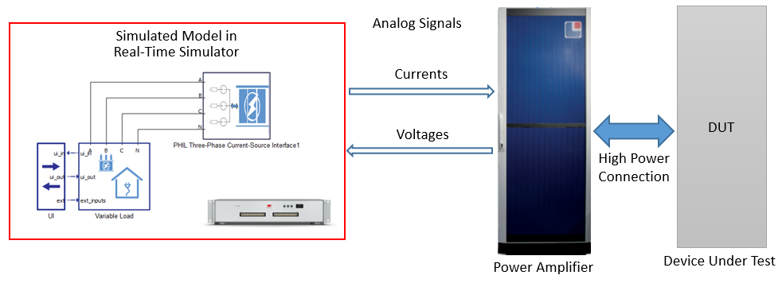

PHIL Three Phase Current Source Interface
This section describes the PHIL Three Phase Current Source Interface component, one of a collection of PHIL components for specific system applications. The PHIL setup where this interface component is used is a high power three-phase current-source.
The PHIL Three Phase Current Source is a PHIL interface component used to link the real time simulation with a real power amplifier, to form a PHIL system, by means of analog input/output signals. The PHIL Three Phase Current Source component's internal structure is shown in Figure 1. It is composed of three analog input controlled voltage sources, voltage and current measurements, and a RMS calculation unit. As can be seen electrically within the simulated model, this interface component is represented by three voltage sources with series resistances. These voltage sources are defined through the analog inputs of the real-time simulator. These analog signals must be provided by the power amplifier. The analog signals that are sent to the power amplifier are the Ia_msr, Ib_msr and Ic_msr currents. These currents are the references for the power amplifier, therefore the amplifier behaves as a three phase current source.
| component | component dialog window | component parameters |
|---|---|---|
|
 PHIL Three Phase Current Source |
 |
|
Dynamic gain and offset settings are available only if the selected real-time simulation HIL device supports Time Varying Elements. When the dynamic gain and offset is enabled, related SCADA inputs are added. This is shown in Figure 1.

The list of measurements available in the PHIL Three Phase Current Source is shown in table below.
Internal analog measurements of the PHIL Three Phase Current Source Interface
| Analog output variable name | Description |
|---|---|
| (name).Ia_msr | Instantaneous phase A current - usually used as a reference for the power amplifier. |
| (name).Ib_msr | Instantaneous phase B current - usually used as a reference for the power amplifier. |
| (name).Ic_msr | Instantaneous phase C current - usually used as a reference for the power amplifier. |
| (name).Va_msr | Instantaneous phase A voltage. |
| (name).Vb_msr | Instantaneous phase B voltage. |
| (name).Vc_msr | Instantaneous phaseC voltage. |
| (name).Ia_msr_RMS | Phase A RMS current. |
| (name).Ib_msr_RMS | Phase B RMS current. |
| (name).Ic_msr_RMS | Phase C RMS current. |
| (name).Va_msr_RMS | Phase A RMS voltage. |
| (name).Vb_msr_RMS | Phase B RMS voltage. |
| (name).Vc_msr_RMS | Phase C RMS voltage. |
A typical use case of the PHIL Three Phase Current Source Interface is in a Three Phase Load Emulator PHIL system (Figure 2). In this system, a load defines the current that it consumes, therefore behaving as a current source. The three phase load is simulated by the real-time simulation. The load currents are measured and fed to the power amplifier's analog inputs through the real-time simulator’s analog outputs. Voltages measured by the power amplifier on its high power terminals are provided to the real-time simulation through analog inputs.
